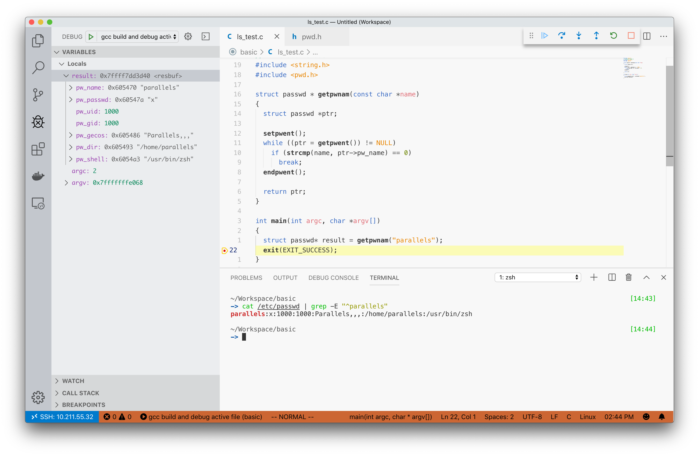
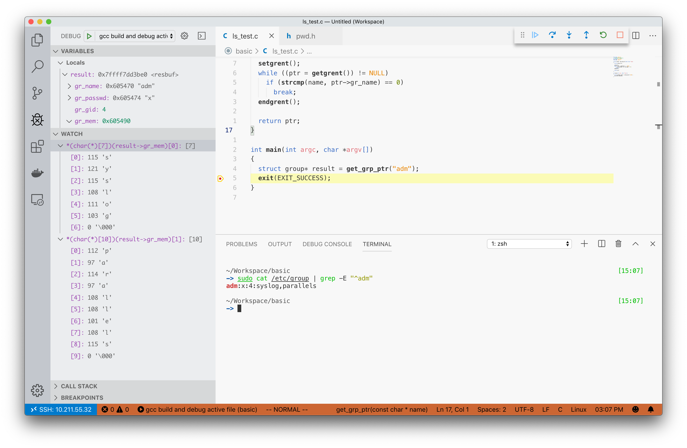
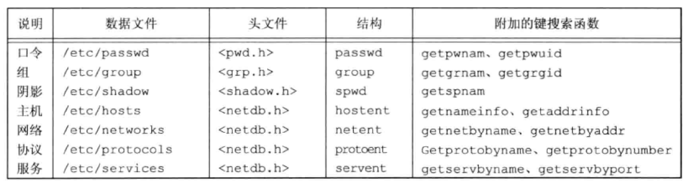
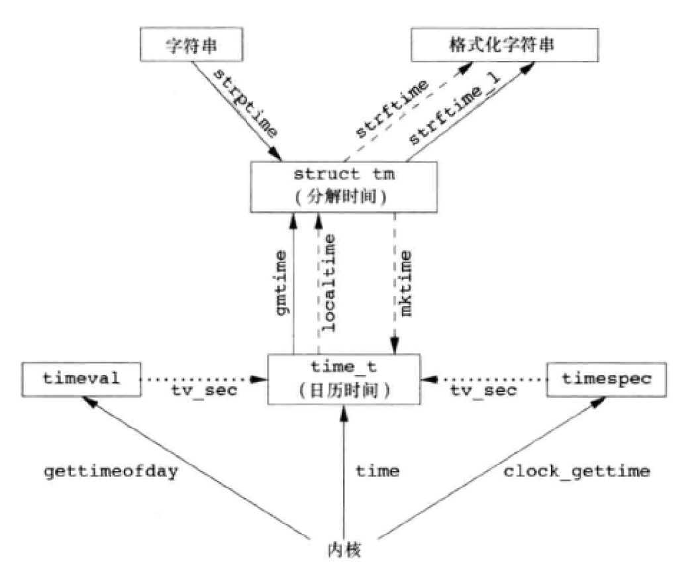
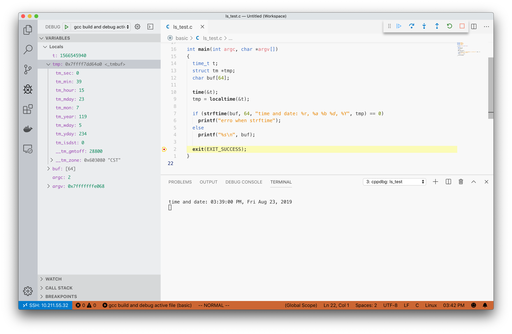

此为第六章笔记
口令文件
/etc/passwd，其中每一行的格式如下
1 | <用户名>:<加密口令>:<用户ID>:<组ID>:<注释字段>:<初始工作目录>:<初始shell> |
禁止用户的登录的方式是对最后的 <初始shell> 进行设置，为： /usr/sbin/nologin 、 /bin/true 或 /bin/false。用户ID（65534）和组ID（65534）不提供任何特权。
可调用的结构体 passwd 定义在 <pwd.h> 中
1 | /* The passwd structure. */ |
下面是使用系统调用的一个例子
1 |
|
结果如下

阴影口令
加密口令是经过单向加密算法处理过的用户口令副本。算法为单向的。为了保护加密口令，系统将加密口令存放到另一个通常被称为阴影口令（shadow password）的文件中。Linux中为 /etc/shadow，每一行的格式如下
1 | <1>:<2>:<3>:<4>:<5>:<6>:<7>:<8>:<9> |
- 用户登录名
- 加密口令
- 上次更改口令以来经过的时间
- 经过多少天后允许更改
- 要求更改尚余天数
- 过期警告天数
- 账号不活动之前尚余天数
- 账户超期天数
- 保留
组文件
1 | <组名>:<加密口令>:<组ID>:<组中的用户> |
例子
1 | adm:x:4:syslog,parallels |
使用c语言读取流程同上。数据结构存放在 <grp.h> 中
1 |
|
允许结果如下

其他数据文件
/etc/services记录各网络服务器所提供服务的数据文件/etc/protocols记录协议信息的数据文件/etc/networks记录网络信息的数据文件

处理时间
详细信息略，将 PDFp171
各个时间函数之间的关系

C语言调用
格式化日期 tm 如下
1 | struct tm |
下面编写一个函数获取当前的时间
1 |
|
执行结果如下
